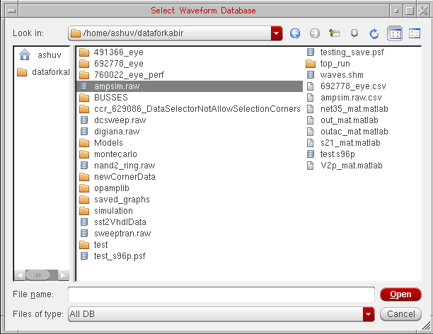
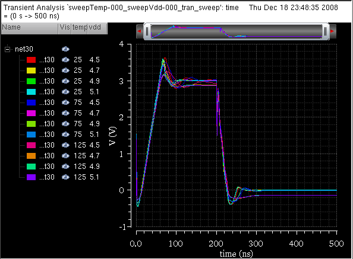

2
Using the Results Browser
You can use the Results Browser, which is opened as an assistant in the Virtuoso Visualization and Analysis XL window, to open the stored simulation results. Results Browser displays simulation results (signals) in a hierarchical arrangement that corresponds to the hierarchy of your design, making it convenient for you to locate and manage simulation data.
This chapter includes the following topics:
- About the Results Browser
- Results Browser Graphical User Interface
- Working with the Results Directory
- Plotting Signals
- Selecting and Plotting Signals in a Data Range
- Creating Special Plots
- Exporting Signals
- Using the Calculator
- Supporting s-parameters
About the Results Browser
You use the Results Browser to access the simulation results that you save to work on later in a different session.
The results for each simulation are stored in a separate results directory. In addition, the results for different analysis types are stored in separate folders. For example, all simulation results for all transient analyses are contained in the tran directory. The various signals in a results directory are displayed in the Results Browser in a hierarchy that is determined by the design.
You can load multiple results directories in the Results Browser. The first directory that you load in the Results Browser becomes the in-context results directory. This means that the expressions in the Calculator are evaluated and the signals displayed in the graph are plotted by using the data available in the in-context results directory. To change the in-context results directory, see Changing In-Context Results Directory.
Opening the Results Browser
The Results Browser is displayed as an assistant in Virtuoso Visualization and Analysis XL. You can open the Results Browser by using one of the following methods:
- Opening Results Browser in the Stand-Alone Mode
- Opening the Results Browser from Virtuoso
- Opening the Results Browser from ADE
Opening Results Browser in the Stand-Alone Mode
To open the Results Browser from Virtuoso Visualization and Analysis XL, do the following:
-
Type the following in a terminal window:
viva -expr skill
The Virtuoso (R) Visualization & Analysis XL window appears with the Results Browser displayed on the left.
You can also open results directories in Results Browser by specifying theviva -dataDircommand-line option as follows:
viva -dataDir “ampsim.raw” “ampsim1.raw”
The specified results directories are opened in the Results Browser with the last-specified directory as in-context results directory.
Opening the Results Browser from Virtuoso
To open the Results Browser from Virtuoso, do the following:
-
In the CIW, choose Tools – ADE L – Results Browser.
The Virtuoso (R) Visualization & Analysis XL window appears with the Results Browser displayed on the left.
Opening the Results Browser from ADE
To open the Results Browser window from the Virtuoso® Analog Design Environment (ADE),
-
In the ADE L or XL window, choose Tools – Results Browser.
The Virtuoso (R) Visualization & Analysis XL window appears with the Results Browser displayed on the left.
If you open Virtuoso Visualization and Analysis XL after running a simulation in ADE, the Results Browser displays the current simulation results directory. Otherwise, the Results Browser is blank.
Results Browser Graphical User Interface
The Results Browser graphical user interface (GUI) consists of the following elements:
Toolbar
The table below describes the toolbar buttons:
| Button | Name | Description |
|
Displays a list of destinations where a signal can be plotted—Append, Replace, New Window, and New Subwindow. By default the signal plot destination is Append. For more information, see Selecting the Signal Plot Destination. |
||
|
Plots the selected signal in the specified window. For more information, see Plotting Signals. |
||
|
Plots in the append mode the selected signal from all open results directory. This helps compare signals that are common to all open results directories. For more information, see Comparing Signals. |
||
|
Displays the signal data in the Virtuoso Visualization and Analysis XL Table. |
||
|
Opens the Calculator and displays the expression for the selected signal in the Calculator Buffer. For more information, see Chapter 4, “Working with the Calculator.” |
||
|
Moves the control to the previous results directory selected in the Results Browser. When you open a new session, this button is not available. |
||
|
Moves to control to the next results directory opened in the Results Browser. |
||
|
Moves the control to one level up in the results directory hierarchy. |
||
|
Plots the difference of two signals in the graph window. For more information, see Plotting the Difference of Two Signals. |
||
|
Plots the Y Vs Y of two signals. For more information, see Plotting YvsY for Two Signals. |
||
|
Enables you to select the range for the sweep data. For more information, see Selecting and Plotting Signals in a Data Range. |
||
|
Enables you to change the default color of different signal types. For more information, see Changing Signal Color. |
If the results directories contain the simulation results for an AC analysis, the Results Browser toolbar displays the following two additional drop-down lists:
| Name | Options | Description |
|
|
||
Location Bar
Lists the paths for the last 20 results directories opened in the Results Browser.
If the results directory path name is long, it is displayed in the right-justified format in the Location Bar. This helps differentiate between the name of the results files when multiple results directories are opened in the Results Browser.
To open a results directory, select it in the drop-down list. To open a new results directory that was loaded earlier in the Results Browser, enter the path in the box, or click the Browse button on the right. For more information, see Opening a Results Directory.
Top Panel
The top panel displays all loaded results directories in a tree view. The  symbol displayed before a results directory indicates the PSF directories.
symbol displayed before a results directory indicates the PSF directories.
Right-click a results directory in top left panel and choose any of the following commands:
- Close Results—To close the selected results directory.
- Open Terminal—To open a terminal at the selected directory.
- Set Context—To set the selected directory as the in-context results directory.
Bottom Panel
The bottom panel displays in a list view the contents of the selected database.
Right-click a signal in the bottom panel and choose any of the following commands:
- Up One Level—To moves up by one directory level.
- Plot Signal—To plot a signal in the specified graph window. By default, the signal is plotted in the append mode.
- Plot from all DBs—To plot in the append mode the selected signal from all the loaded results directory in the append mode to compare the signals. For more information, see Comparing Signals.
- Export—Exports a waveform. For more information, see Exporting Signals.
- Calculator—Opens the Calculator. For more information, see Chapter 4, “Working with the Calculator.”
- Table—This button is not available in IC6.1.5.
- Diff—Plots the difference of two signals. For more information, see Plotting the Difference of Two Signals.
- YvsY—Plots Y versus Y for two signals. For more information, see Plotting YvsY for Two Signals.
- Append, Replace, New Subwindow, and New Window—Specifies the plot destination. For more information, see Selecting the Signal Plot Destination.
Search Bar
Enables you to filter and search signals across multiple databases in the Results Browser.
For more information about filtering and searching signals, see Filtering and Searching For Signals.
DB Type Identifier
When you point to an open database in the Results Browser, the following information is displayed in the given order for the folders in the database.
Working with the Results Directory
This section describes how you can open a results directory, select signals in the results directory, and perform filtering and searching operations on the signals in the results directory.
- Opening a Results Directory
- Selecting Signals
- Filtering and Searching For Signals
- Updating Results Directory Data
Opening a Results Directory
To open a results directory in the Results Browser, do one of the following:
-
In the Results Browser window, type the results directory path in the location bar and press the
Enterkey. -
In the Results Browser window, select a path from the drop-down list. The drop-down list displays the paths for previously opened results directories. You can also click the browse button and select the required results directories.
In the Virtuoso Visualization and Analysis XL window, do one of the following to open a results directory:- Choose File – Open Results.
-
Choose Browser – Results – Open Results.
The Select Waveform Database form appears. This form has two panes—the directory pane, also called Favorites, on the left displays the parent directories, and the content pane on the right displays the files or directories contained in the parent directory that you open. The directory pane includes the links to the home directory and the current working directory. You can drag the directories or files and place them in the directory pane to have direct access to them. Now, when you open this form next time, the form is opened with the same settings.

- In the Look In field, browse to locate the results directory that you want to open. If required, you can open multiple results directories. By default, this field displays the path of the directory from where the you opened the results recently in the Results Browser.
-
Select the results directory that you want to open. You can select multiple directories at a time by using the
Ctrlkey.
The form includes the following three buttons in the upper-right corner:- Parent Directory—To open the parent directory. This button is available if you have nested results directories.
- Descend Inside Directory—To view the contents of the parent directory and to move to the next-level directory.
- Refresh—To refresh the results directories present in the selected location.
- List View—To display directories in a list view.
- Detail View—To display directories in the detail view.
-
Click Open.
The selected results directory is opened in the Results Browser. If this is the first directory that is opened in Results Browser, it is dispalyed in green and the icon is displayed next to the directory name to indicate that it is the in-context results directory.
Changing In-Context Results Directory
To change the database context directory from the Results Browser, perform the following steps:
- Open the results directory that you want to use to build expressions.
-
Right-click the results directory name and choose Set Context.
The database context is set to the selected directory.
Selecting Signals
In the Results Browser, the top pane displays the results directories and the bottom pane displays the datasets in the selected results directory.
Perform the following steps to select a signal in the Results Browser:
-
Double-click a results directory in the top panel.
The results directory is expanded and the folders containing data from different analyses are displayed in the bottom panel. -
Double-click the appropriate dataset directory.
The signals are displayed in the bottom panel. Each signal has an icon displayed next to it, indicating the signal type. -
Right-click the signal and choose the command to either plot it or send it to the Calculator Buffer. For more information about these operations, see the following chapters:
- Graphs: Chapter 3, “Working with Graphs.”
- Calculator: Chapter 4, “Working with the Calculator.”
Selecting Multiple Signals
Do one of the following to select a set of consecutive signals:
-
Click the first signal. Hold down the
Shiftkey, and then click the final signal in the set. - Drag the pointer to select a set of consecutive signals.
Do the following to select a set of non-consecutive signals:
-
Click the first signal. Hold down the
Ctrlkey while you select the required signals one-by-one. - Drag to select appropriate signals.
Changing Signal Color
To differentiate between the various signal types, such as voltage, current, analog, and digital signals, you can change the color of signals. Do the following to change the signal color:
-
Click the button on the Results Browser toolbar.
The Select Color form appears.
-
In this form, select the signal type for which you want to change the color.
Changing In-Context Results Directory
The first results directory that you open in the Results Browser is set as the in-context results directory and displayed in green. The symbol is displayed to the left of the in-context results directory path.
To change the in-context results directory, open the results directory that you want to make in-context in the top panel and do one of the following:
- Right-click the results directory path and choose Set Context.
- Choose Browser – Results – Set Context.
The selected results directory becomes the in-context results directory.
Setting the in-context results directory plays an important role in performing the following tasks:
- Building expressions in the Calculator. For more information, see Results Toolbar.
- Reloading graphs in the graph window. For more information, see Reloading Graphs.
Interactive.3 and you plot the signal /OUT with three traces C0_0, C0_1 and C0_2 from corner C0. Now, if you change the context to Interactive.4, which has the five traces C0_0, C0_1, C1_0, C1_1, C1_2 from corner C0 and C1. Using Reload plots all these five traces from corner and C1.Filtering and Searching For Signals
You can filter and search for signals in a selected database according to the signal type or by using the signal name. When you open Virtuoso Visualization and Analysis XL window from within ADE XL, you can also search for signals across current datasets.
This section includes the following topics:
Filtering Signals
You can filter signals by using the filter toolbar located at the bottom of the Results Browser. By default, this toolbar is displayed when the Results Browser is opened. You can also click the Signals tab to view this toolbar.
The available options are determined by the selected dataset. For example, the available options for an analog dataset are All, V, and I.
- Type the filter pattern in the provided text box.
-
Select
ShellorRegExpfrom the drop-down list to filter signals based on a shell or regular expression. - Select the Match case check box to perform case-sensitive filtering.
- Click .
- All the signals matching the specified filter pattern are displayed.
Searching For Signals
To display the search bar, click the Search tab in the Results Browser window. The search toolbar is displayed at the bottom of the Results Browser. By default, search is performed in the selected directory and its subdirectories.

To search for a signal in the current database:
-
In the drop-down list, select one or more options as listed in the table in the previous section.
- Type the search string in the Specify Search Pattern field, which includes a text box.
-
Select
ShellorRegExpfrom the drop-down list to search signals based on a shell or regular expression. - Select the Match Case check box to perform a case-sensitive search. By default, search is not case-sensitive.
- Select the All DBs check box to search the specified pattern in all the open results databases in the Results Browser.
- Click the button.
If the results database in which you perform signal search is large, the searching process may take longer than usual. In this case, a Searching pop-up message appears, as shown in the figure below. It also includes a Cancel button that you can click to stop the search process.
After the search process is complete, the searched signals are listed in the Search tab.
Examples
-
Type
v(dd|ss)to search for all the voltage signals that containvddandvssin their names. -
Type
n[1-9]to search for numbered nets.
The signals that meet the specified search criteria are displayed in the bottom panel of the Results Browser, as shown in the figure below:
If you search for a signal by typing the signal name in the search pattern field and you get multiple occurrences of the signal, the signals with the same signal name are listed out separately in the search output. You can view the path to find the difference between the signals. For example, in the figure below, the out signal is found in two folders, ac-ac and tran-tran.
The search output also includes the icons to indicate the type of the searched signals. For example, is displayed in the figure below to indicate that out is a voltage signal. Also, if the results directory path is long to fit in the search pane, it is displayed in a right-justified format in the search output to improve the readability. If you move the pointer on this path, the tool-tip displays the complete path name.
By default, signal search is performed at directory level, which means only the currently selected directory and its subdirectories are searched to find the signal matching the specified search pattern. For example, if you select the tran directory, as shown in the figure below, and search for the out signal, the search is performed only in the tran directory and its subdirectories. If the signal exists in this directory, it is listed in the search output.
However, you can also search for a signal in all the opened databases in the Results Browser by selecting the All DBs check box. The figure below displays the search results for the net signal when searched in all the opened databases and datasets.
Updating Results Directory Data
When you re-simulate your design, the Virtuoso Visualization and Analysis XL tool automatically refreshes the data directory if you perform an action that accesses the database. All new graphs that you create display the updated data, which helps you monitor long simulations. The graphs that are already open are not updated.
Plotting Signals
To plot a signal, right-click the signal in the Results Browser and choose Plot Signal. The signal is plotted in the specified graph window. A progress bar is displayed when a signal is loaded from the database to the graph window.
You can use the Ctrl key to select multiple signals in the Results Browser, and then right-click the selection and choose Plot Signal to plot all the signals in the graph window. While the signals are loading, a progress bar indicates the percentage of signal data loaded from the database. This includes information about how many signals are successfully loaded out of the total number of signals.
A Cancel button is displayed below the progress bar. You can click this button to stop loading the remaining signals. For example, in the figure below, five signals are loaded out of a total of eight signals. If you click the Cancel button at this stage, the signal loading process stops and the remaining three signals are not loaded.
At any point, if you want to plot the traces for the signals for which you canceled the loading process, right-click anywhere in the graph and choose Plot Cancelled Traces. The traces for the canceled signals are plotted in the same window in append mode. The Plot Cancelled Traces option is available only when some of the selected signals are partially loaded.
The progress bar is not supported for databases in the SST2 and FSDB formats and works only with the PSF, PSF XL, and other related formats. This progress bar is also not supported when an expression is plotted in the graph window during evaluation.
For detailed information about how to create a graph, see Chapter 3, “Working with Graphs.”
This following sections describe the available plot destination options and the graph types that you can use to display the plotted signal.
Selecting the Signal Plot Destination
The first graph that you plot in a session is displayed in a new graph window. If you already have a graph window open, you need to specify the destination to plot the new signal. This section describes the available destination options.
For information about how to select the signal plot destination, see step 2 in Selecting and Plotting Signals in a Data Range.
Appending to a Graph
You can append the trace for a signal to a graph that is already plotted in the graph window. If the traces share the same unit, the new trace is assigned to the same Y-axis. Otherwise, it is assigned to a new Y-axis. If the graph window already has four Y axes, or if the units do not match, the Virtuoso Visualization and Analysis XL tool plots the new signal in a new subwindow in that graph window.
The figure above shows the trace for the V2:p signal appended to the graph containing the trace for the in_m signal. The Y-axis unit for in_m is V and the Y-axis unit for V2:p is mA. Therefore, the trace for V2:p is assigned to a new Y-axis.
Replacing a Signal
You can plot a new signal to replace a signal or group of signals in the selected graph window or subwindow. The graph window or subwindow retains all its attributes. If the signal to be replaced contains markers, the markers are attached to the new trace if both signals have the same name.
If no graph window is open, a new graph window is created.
Plotting to a New Subwindow
You can plot a graph in a new subwindow within the selected graph window. The following figure shows the graph for the V2:p signal plotted in a subwindow.
Plotting to a New Window
You can plot a signal to a new graph window.
Selecting the Graph Type
You can use different graph types to represent different data types. The Virtuoso Visualization and Analysis XL tool supports rectangular, polar, admittance, impedance, immittance, and real versus imaginary graph types. Each dataset represents a specific analysis type and can be plotted only to a specific graph type.
This section describes the available graph types. For information about how to specify the graph type, see step 3 in Selecting and Plotting Signals in a Data Range.
Default
The default graph type is determined based on the type of data in the simulator data file. For example, the default graph type for transient data is rectangular.
Rectangular Graphs
Transient and DC sweep data is always plotted in a rectangular graph. You can also plot portions of complex data in a rectangular graph by selecting the modifier: real, imaginary, magnitude, or phase. The Virtuoso Visualization and Analysis XL tool plots the selected modifier against the frequency.
Polar Graphs
Polar graphs represent data by using the polar coordinates system. Points are plotted at a given radial distance along a ray that creates a given angle with the positive X-axis.
The following example illustrates how you can plot a point (45 degrees, 1).
Admittance, Impedance, and Immittance Graphs
Admittance, impedance, and immittance graphs are a direct graphical representation, in the complex plane, of the complex reflection coefficient. They reveal the complex impedance anywhere along a line.
The center of the chart normally represents 50 ohms but can be any impedance line you want—it is normalized to 1.0 units. Everything is scaled relative to the unit you choose. The nature of impedance is that of a real or resistive portion, and an imaginary, or reactive portion, combined in the Pythagorean style.
The circular graph has four goalposts spaced 90 degrees apart graphically and 45 degrees apart electrically. Two goalposts are resistive—one a short and the other an open—the left and right sides, respectively. The top and bottom posts are reactive, either inductive, or capacitive. Every point in between represents the various combinations resulting from a mismatched condition.
You can display either impedance, admittance, or immittance grids in the Smith chart that you create—the grids are mirror images of each other.
Real Vs Imag
Real Vs Imag graphs plot the real part against the imaginary part. These graphs are available only for AC data.
Selecting and Plotting Signals in a Data Range
The data range feature in the Virtuoso Visualization and Analysis XL tool makes it convenient to use a large dataset efficiently by opening only the portion of the dataset that you need. You can specify a particular time range in a transient analysis, and then open the dataset and plot signals that fall within that range. For data families like corners or sweeps, you can load specific points in the analysis by using the data range feature.
Any data filtered out by the data range is not available for plotting until it is enabled in the Set Sweep Ranges form, as described below.
Plotting a Signal over a Time Range
You can plot transient data over a time range. To specify the time range for a transient dataset, do the following:
- Select a transient signal.
-
Click the button on the Results Browser toolbar.
The Set Sweep Ranges form appears.
The Start and End fields display the signal range. -
In the Start field, type the time at which you want the plot to begin.
If you want the graph to be plotted from the first data point in the signal, select Default from the Start drop-down list. -
In the End field, type the time at which you want the plot to end.
If you want to display the time for the last data point in the signal, select Default from the drop-down. - Click OK.
-
Click .
The graph window appears with the graph plotted for the specified time range.
Plotting Parametric Sweep Data
A parametric analysis sweeps a parameter or a group of parameters and runs one or more analyses for each combination of parameters.The Virtuoso Visualization and Analysis XL tool helps you analyze the resulting data efficiently.
To plot a part of parametric swept data, do the following:
- Select a parametric signal.
-
Click the button on the Results Browser toolbar.
The Set Sweep Ranges form appears, displaying a list of inner sweep variables. - Select the values that you want to plot and click OK.
-
Click .
The graph window appears with graphs for all the combinations of sweep variables.
An Example of Plotting Data from a Parametric Sweep
To plot selected curves from the parametric data, do the following:
- In the Results Browser window, open the data results for a parametric sweep.
- Select a parametric signal in the results data directory.
-
Click the button.
The Set Sweep Ranges form appears. The Start and End fields display the range of the signal. All thetemp(temperature) andvdd(inner sweep variable) values are selected by default.
-
In the temp list, click
25.0, hold down theCtrlkey, and click75.0, and125.0. -
In the vdd list, click
4.5, hold down theShiftkey, and click5.1.
The form now displays the data ranges as shown in the figure below.
- Click OK.
-
In the Results Browser window, right-click the
outsignal and choose New Window.
The graph window appears with the traces plotted for the parametric family. Each trace in the family is annotated by a sweep path that describes the parameter-value pair.

Creating Special Plots
This section describes how to plot the YvsY and the difference of two signals. This section also describes how you can compare signals for various datasets contained in different results directories.
Plotting YvsY for Two Signals
This section describes how to plot the Y-axis values of one signal versus the Y-axis values of another signal. You can plot YvsY to measure input offset voltage, which displays the offset between the input and output of the circuit.
To plot YvsY, select a signal in the Results Browser and do one of the following:
- Click the button and select the second signal
-
Select the second signal and click the button.
The graph window appears with the trace plotted for Y versus Y.
The following figures illustrate the out and in_m signals.
When you plot a YvsY graph for these signals, the result is a diagonal line because the signals are identical, as shown in the figure below.
Plotting the Difference of Two Signals
To plot the difference of two signals, select a signal in the Results Browser and do one of the following:
- Click the button and select the second signal.
-
Select the second signal and click the button.
The difference between the selected signals is plotted in a graph window.
The following figures illustrate an example:
Comparing Signals
If you run multiple simulations on the same data type, multiple results directories containing the same signals with different values are generated.
You can open these results directories in the Results Browser to compare the signals contained in the results directories. The signals from all the results directories are plotted in a graph window in the append mode to facilitate comparison
You can use one of the following two ways to compare signals:
- Open the respective results directories and plot the signals, one by one, in the append mode in a graph window. This is a time consuming task.
- Right-click the signal in a results directory and choose the Plot from all DBs, or select a signal in a results directory and click on the Results Browser.
The figure below shows the out signal plotted from two different results directories. The two signals are overlapped because they have same data values.
Exporting Signals
You can export signals from a results directory in a variety of formats and later load these signals in the required application. You can also save a part of the dataset by specifying the start and end values, or interpolate the data before saving it.
The following sections describe the two types of export provided by Virtuoso Visualization and Analysis XL:
Exporting Signals from One Results Directory
To export signals from one results directory at a time, do one of the following:
-
Right-click a signal in the Results Browser and choose Export. You can select multiple signals by holding down the
Ctrlkey while you click the required signals. -
In the Results Browser, select a signal, and then in the Virtuoso Visualization and Analysis XL window, choose Browser – Results – Export.
The Export Waveforms form appears. This form has the similar settings as of the Select Waveform Database form. In both forms, the left pane includes the links to the home directory and the current working directory.
In this form, do one of the following to export the selected a signal:-
In the Look In field, browse to locate the path of the data directory where you want to save the selected signal. By default, this field displays the path of the directory from where the you opened the results recently in the Results Browser.
The form includes the following three buttons in the upper-right corner:- Parent Directory—To open the parent directory. This button is available if you have nested results directories.
- Descend Inside Directory—To view the contents of the parent directory and to move to the next-level directory.
- List View—To display directories in a list view.
- Detail View—To display directories in the detail view.
- In the File name field, specify a filename.
-
In the Files of type field, select the file type. The file type (indicated by the file extension) determines the format in which the signal is saved. You can also specify the file type with the filename.
The supported file types are as follows:-
VCSV(Visualization & Analysis File)format (default) allows you to save traces that can be loaded from within the Virtuoso Visualization and Analysis XL tool for use in the future. You can also add comments to the VCSV file after the standard header line. -
Matlabformat allows saved traces to be imported into Matlab. The Matlab format can be imported to Matlab by using the import wizard. -
SPECTRE(Spectre Input)format allow saved traces to be used as inputs to the Spectre PWL input voltage or current sources. -
PSF(Parameter Storage Format) format is available for use only in the Virtuoso Visualization and Analysis XL tool. The PSF format does not support digital data. -
SST2format. -
CSV(Comma-Separated) format. It is not a recommended format because waveform saved using this format cannot be read back in Virtuoso Visualization and Analysis XL. When you select this format, the following message appears in CIW:
The selected file is in CSV format that cannot be loaded into ViVA. It is recommended to export the files in VCSV format if you want to reload them later.)
-
- Select the Clip Data check box if you want to export a clip in the signal. Specify the clip start and end values in the Start and End fields.
-
Select the Interpolate check box, if you want to export interpolated data. In the Step Size field, specify the step size. Select Log if you want to save the value by using a logarithmic scale.
-
Select the Significant Digits check box if you want to modify the significant digits. The default value is
16. - The Use names from graph check box is disabled when you export a signal from the Results Browser. If you export a trace from the graph, you can select this check box to use the trace names that are displayed on the graph. When this check box is not selected, you can enter any name.
-
If you are exporting signals in the CSV format, you can select the Include Corner info check box to print the corner information in the header of the CSV file.
-
Click Open.
The selected signals are exported to the location that you specified.Th
-
In the Look In field, browse to locate the path of the data directory where you want to save the selected signal. By default, this field displays the path of the directory from where the you opened the results recently in the Results Browser.
Reading VCSV and CSV Files
The below figures show the contents of VCSV and CSV files when you export the out and in_p signals in the VCSV and CSV formats. Notice that the header part of this file includes the trace and axes names.


The header of VCSV file describes the data for the VCSV format. contains the version, signal names, X and Y axes names, type of data, and X and Y axis units.
The description of the VCSV file format is explained as follows:
<ASCII> ::= <HEADER> <WAVEFORMS> <br>
<HEADER> ::= <VERSION> <TITLES> <AXES> <TYPES> <AXISNAMES> <UNITS> <br>
<VERSION> ::= <COM> Version, <MAJOR>, <MINOR> <br>
<TITLES> ::= <COM> <TITLE> [,<TITLE>]... <br>
<AXES> ::= <COM> <X_AXIS>, <Y_AXIS> [,<X_AXIS>, <Y_AXIS>]...<br>
<TYPES> ::= <COM> <X_TYPE>, <Y_TYPE> [,<X_TYPE>, <Y_TYPE>]...<br>
<UNITS> ::= <COM> <X_UNIT>, <Y_UNIT> [,<X_UNIT>, <Y_UNIT>]...<br>
<WAVEFORMS> ::= <XVAL>|<BLANK>, <YVAL>|<BLANK> [, <XVAL>|<BLANK>, <YVAL>|<BLANK>]
<TITLE> ::= string representing signal name<br>
<MAJOR> ::= non-negative integer<br>
<MINOR> ::= non-negative integer<br>
<X_AXIS> ::= Re | Logic | LogicBus | String | Int
<Y_AXIS> ::= Re | Logic | LogicBus | String | Int | WRe | ComplexRe,ComplexIm
<X_TYPES> ::= string with the name of the axes
<Y_TYPES> ::= string with the name of the axes
<X_UNIT> ::= string with the name of the unit
<Y_UNIT> ::= string with the name of the unit
<XVAL> ::= string representing the value of corresponding <X_TYPE>
<YVAL> ::= string representing the value of corresponding <Y_TYPE>
<COM> ::= ;
Important Points to Note
-
The number of titles, axes, type and unit pairs matches the number of
VAL|BLANKpairs. - The VCSV format can hold any number of waveforms.
- The waveform data is displayed in a tabular format. Each column of the table holds an XVAL and a YVAL for each point in the waveform.
- The column may be padded with blank entries for each waveform that is shorter than the longest waveform.
- Each XVAL or YVAL can either be a single real number or a pair of real numbers. If it is a pair, then the value is a complex number and the pair represents the real and imaginary portions. All elements after the semicolon are separated using commas(,).
Example
;Version, 1, 0
;out
;X, Y
;Re, Re
;time, V
;s, V
0,0.004440607445487187
5e-10,0.004440607090222714
1e-09,0.004440606671144719
1.039391594778919e-09,0.06871790847019299
1.100122217530249e-09,0.1600997058953832
1.149652372750584e-09,0.2239608226282024
-
;Version, 1, 0—This is the version of the format. The current version if 1, 0. -
;out—The file contains one signal namedout. -
;X, Y—The data is organized into two columns, the first is the X-axis data the second is the Y-axis data -
;Re, Re—The two columns contained real (Re) data. -
;time, V—The X-axis when plotted is labeled with the stringtime, the Y-axis is labeled withV. -
;s, V—The X-axis unit issand the Y-axis unit isV. -
The rest of the lines show the data points for the signal
out. The values for six points are shown in the example above.

The first line in the text file contains the column headers separated by commas. Each subsequent line contains a table row with the trace data values separated by commas.
Values displayed in table are saved to the text file. For example, if you hide a column and then save the table, the data in the hidden column is not saved in the text file. The Table tab name is not saved when you save a table in the CSV format.
Reading MATLAB Files
When you save a trace in the matlab format, a .matlab file is created, for example, test.matlab. To open this file in MATLAB, type the following command in the MATLAB terminal window:
T=readtable('test.matlab','FileType','text')
This command creates a text-based table from the file and lists the file contents in tabular format. For example, refer to the figure below that lists the X and Y coordinates for the out signal in a text-based tabular format.
Exporting Signals from Multiple Results Directories
You can select signals from the same or different results directories and export them in a common file.
To export multiple signals from multiple results directories, perform the following steps:
-
In the Results Browser, open a results directory and right-click the signals you want to export and choose Send to Export List. The Waveforms to be Exported form appears, as shown in the figure below:
In this form, select the location, the name and the type of the file in which you want to export the selected signals. If you select an existing filename, a dialog box appears to confirm whether you want to overwrite the file contents. Click Cancel if you do not want to overwrite and specify a new name. For more information about the fields on this form, see Exporting Signals.
The signals you select in the Results Browser are listed in the Export List section at the bottom of the form. -
Now, if you want to add multiple signals from another results directory, open the results directory. Then, right-click the signal you want to import and choose Send to Export List. The selected signals are listed in the Export List section.
To select multiple signals from a single analysis directory in a results directory, use theShiftandCtrlkeys. -
Repeat
step 2if you want to add more signals. -
When done, click Save. The Save button is enabled only after you specify a filename.
The selected signals are added to the specified file.
Deleting Signals
To delete a signal listed in the Export List section, right-click the signal and choose Delete.
To delete all the signals, choose Delete All.
Example
Consider the following example in which you add four signals (two from transient analysis and two from AC analysis) from two different results directories, ampsim.raw and aExamples.raw.
Now, save these selected signals in a file, SampleFile, of type PSF. The SampleFile.psf file is created at the specified location. If this filename already exists, a pop-up message appears asking if you want to overwrite the file. The Save button is enabled only when you specify a filename.
Once the file is saved, open it in the Results Browser. The figure below shows the contents of this file. Notice that two separate folders, ac and tran, have been created for the AC and transient signals.
Using the Calculator
You can use the Calculator to evaluate signals stored in a results directory in the Results Browser. To load the signal from the Results Browser to the Calculator, do one of the following:
- Right-click a signal and choose Calculator.
-
Select a signal and click the button.
The Calculator window appears and the selected signal is displayed in the Buffer.
For more information, see Chapter 4, “Working with the Calculator.”
Supporting s-parameters
The Virtuoso Visualization and Analysis XL supports the industry standard Touchstone format that can read the data files created by any simulator. This format also helps plot n-port s-parameter data if you use Spectre and SpectreRF as simulators.
The touchstone file is an ASCII file, also known as the SnP file, which includes a large signals S-parameter results. The touchstone files are of .snp extension, where n is the number of network ports of the device. For example, if the touchstone file contains the network parameters for a two port device, it has .s2p extension.
Using s-parameter touchstone file for a 2-port network, you can plot the 2-port impedance equivalent parameters C, L, R and the quality factor Q, and s-parameters from Results Browser.
Return to top